오늘 소개할 녀석은 밀덕 개붕이라면 한번쯤 들어본 LPVO 라는 조준경임
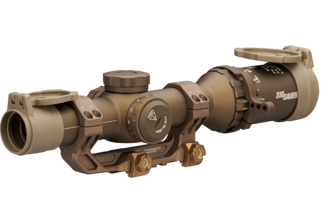
이녀석이 되시겠다.
개붕이 : 아니 그냥 스코프 아님? 스코프면 스코프지 LPVO는 또 뭐임???
ㅇㅇ... 그냥 스코프가 아님
무려...
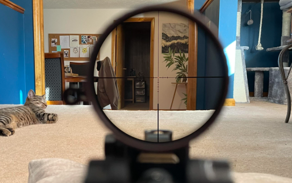
이렇게 1배율까지 초 저배율로 내려가는 스코프다 이마리야...
개붕이 : 오... 확실히 뭔가좀 다르군요..
근데 1배율까지 내린다는건 알겠는데 그럼 뭐가 좋은거죠??
쉽게말하면... 1배율 상태에서는
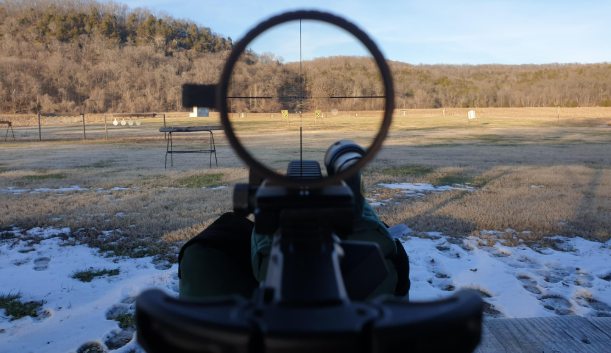
이렇게 배그에서 나오는 레드닷 마냥
초 근거리 혹은 실내에서 쏠수있고
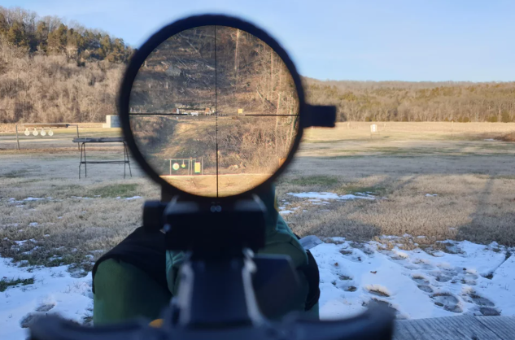
300~400m 장거리에서는 이렇게 6배율로 땡겨서 쏠수 있는 다목적 조준경 이라는 소리임
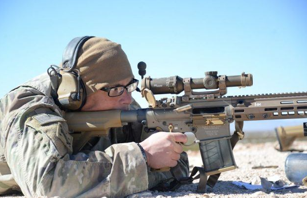
물론, 이전까지는 기술적인 난이도로 완성도가 떨어졌지만...
2010년 전후로 광학 기술의 발전덕에 감당할만한 가격에 쓸만한 성능이 나오자
미군 특수작전 사령부 SOCOM을 비롯해서 보급이 시작되었고
이후 민간 전술사격대회에서 인기가 폭발하며 대중화가 시작되었음
개붕이 : 과연.. 이런 만능 도라에몽 도구가있다면
그럼 이제 배그나 콜옵에서 레드닷 볼일은 없어지겠네요
물론, 지금은 개같이 멸망해서 중고매물이 쏟아져 나오고있다.
개붕이 : 아니 시발... 아까는 만능 스코프 라면서요..
ㅇㅇ
일단 성능만 봤을때는 그럴듯해보였음
다만 간과한게 있다면, 저게 뭔짓을 해도 스코프는 스코프였다는거..
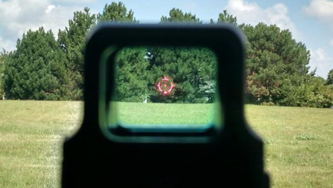
기본 홀로그램은 머리에 이고 보든, 발가락에 끼고 보든, 거꾸로 누워서 보든
어느각도에서 보더라도 이렇게 보이지만..
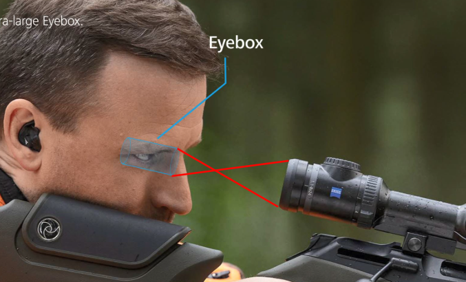
조준경은 그게 안됐음
정확하게 정해진 저 아이박스 안에서만 시야가보였고
저 아이박스존 에서 시야를 벗어나면
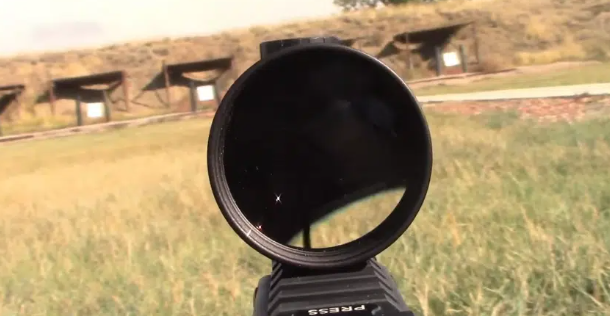
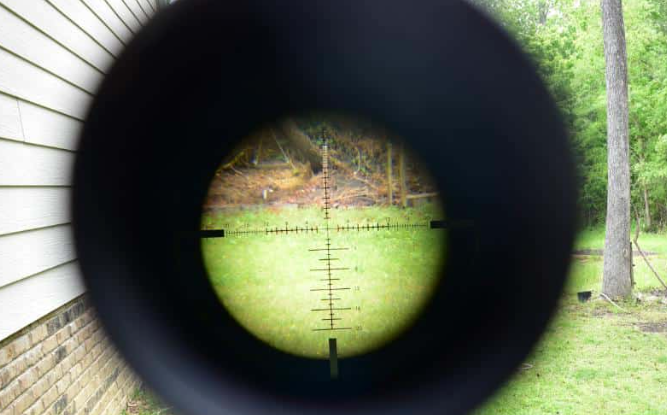
바로 이렇게 개지랄이 나기 시작함ㅋㅋㅋ
심지어 설명 사진에 나온 아이박스는 예시일뿐이라서
실제 저 아이박스 크기는 3mm~15mm 안밖임..
현실적으로 표시하게된다면
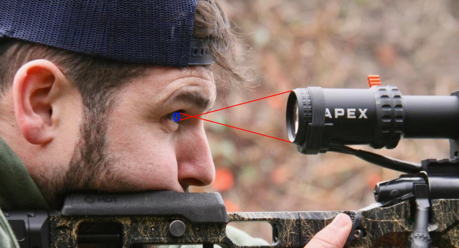
이렇게 된다...
저 파란색 구간에서 1mm 라도 벗어나면 위짤처럼
지랄이 나기 시작한다...
개붕이 : 어... 그래도 그건 1배율 이야기잖아요?
아까 말한 300~400m 장거리 구간에서는 쓸만하지 않을까요?
ㅇㅇ.. 확실히 장거리로 가면 나아지긴 한데..
여기서도 문제가 있음
기본적으로 LPVO 라는 종류는 1배율까지 낮추다보니
기계적으로 어쩔수없이 초점이 고정되어있음
즉, 정밀한 초점조절 기능이 불가능 하다는 점이다..
그래서 유투버가 직접 동일한
10배율 일반 스코프 vs 10배율 LPVO스코프로
600m거리에서 실험을 해봄
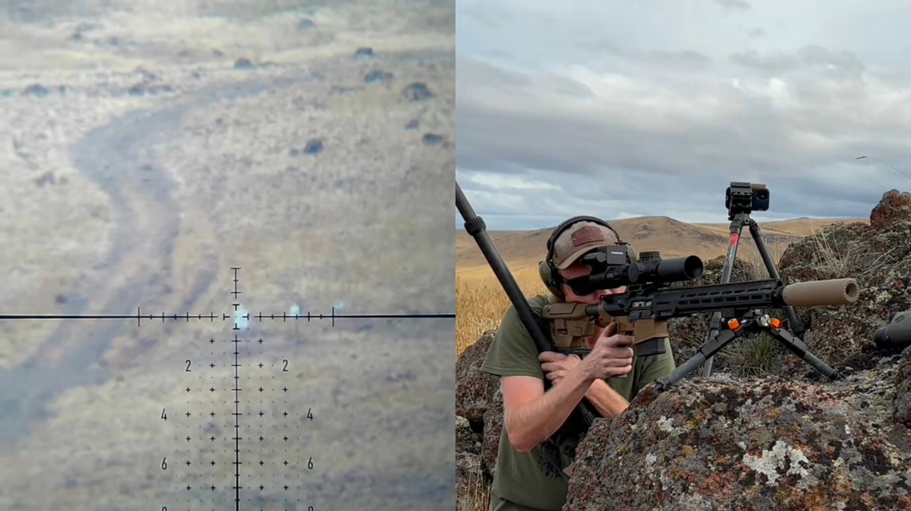
첫번째가 일반적인 조준경
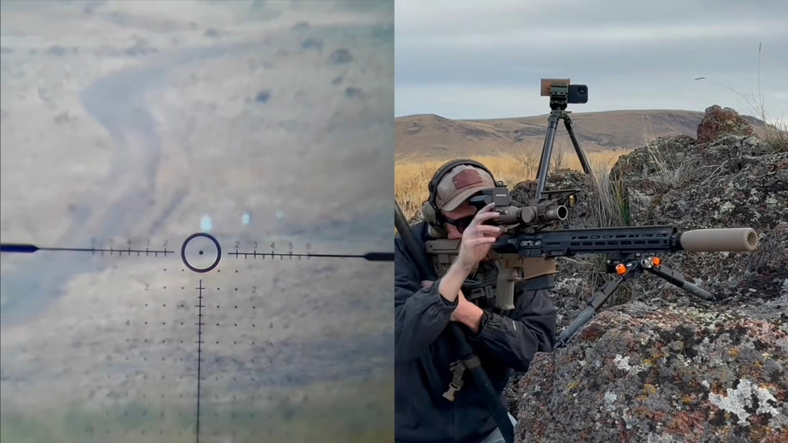
그리고 대망의 두번째가 LPVO 스코프...
딱봐도 일반 스코프와 비교해했을때
주변 환경과 표적이 싹다 뭉개져 버린다.
유투버역시 LPVO스코프는 동일한 배율임에도 불구하고
선명도가 현저하게 떨어져서 사격에 어려움이 있었다고 말함..
개붕이 : 그래도 저건 600m 잖습니까 선생님..
스코프랑 홀로그램 딱 중간거리인 200~300m 정도라면...
ㅇㅇ... 맞음
근데 이런 홀로그램 조준경 회사들도 바보는 아니라서
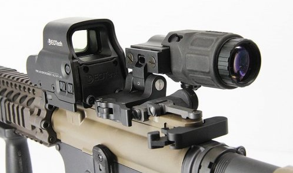
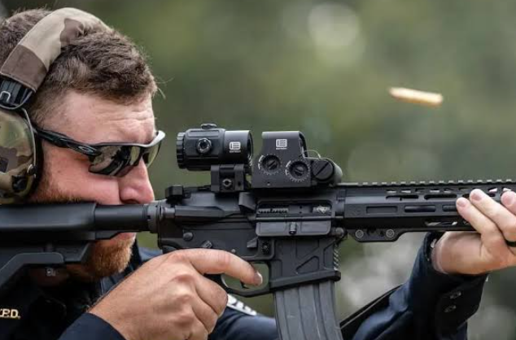
이렇게 접이식으로 5배율까지 확대가 가능한
확대경 모듈을 따로 출시함...
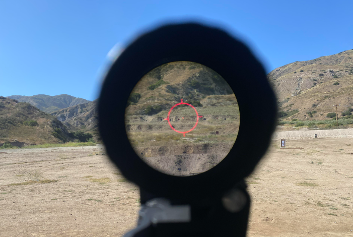
100m미만에서는 그냥 홀로그램 조준경으로 조준하고
유일한 약점이었던 200~300m 중거리구간역시 확대경만 '딸깍' 하면
사실상 완벽하게 커버가 되어버림...
그럼 결국...
그렇다.
두마리토끼를 잡자 라는 마인드는 좋았지만...
LPVO 스코프는 결국
근거리, 중거리에서는 반응속도, 편의성에서 홀로그램에 밀리고.
중거리, 장거리에서는 선명도, 정밀도에서 일반 스코프에 밀려
현재는 전성기시절의 인기는 전부 사라지고
퇴물 수순을 밟고있음...
그리고 조준경 회사들도 이런 기류를 읽고
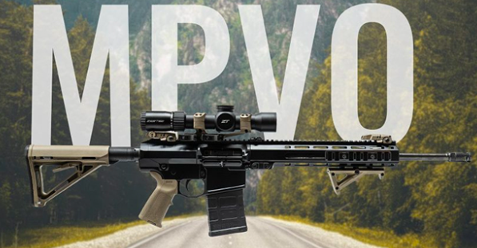
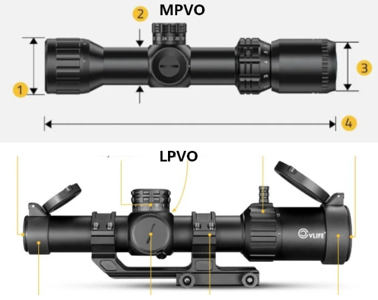
애매한 1배율~6배율 을 만들어 이도저도 아닌 것을 만드느니,
차라리 좀더 전문적으로 중거리에 집중하자 라는 트렌드로
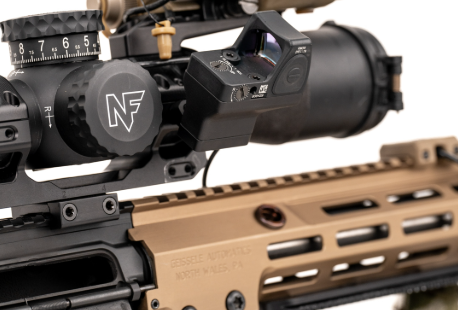
근거리는 그냥 옆에 미니 홀로도트를 붙여서 커버하고,
2배율~12배율 정도의 중거리 조준경인
MPVO를 만드는것으로 갈아타게되었다고 한다...
읽어줘서 고맙다.
배그에서 본거 가타!